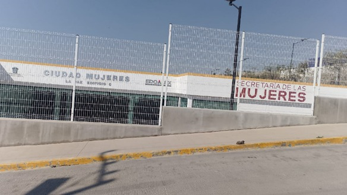

La Ciudad de las Mujeres es un espacio que brinda atención integral a las mujeres de la región.La Ciudad de las Mujeres proporcionará servicios de atención a la violencia de género, cuidado infantil, para adolescentes, salud sexual, médica general, capacitación para elaborar proyectos productivos, entre otros.
Nueve Secretarías del Sector Central (Secretaría de Desarrollo Social, Secretaría de las Mujeres, Secretaría de Cultura y Turismo, Secretaría de Educación, Secretaría del Trabajo, Secretaría de Desarrollo Económico y Secretaría de Justicia y Derechos Humanos, contando con la Participación de la Secretaría de Salud, a través de unidades de salud), Un Organismo Público Descentralizado (Sistema para el Desarrollo Integral de la Familia (DIF) del Estado de México a través de la Procuraduría de Protección a Niñas, Niños y Adolescentes mediante el sistema de Ludoteca y Lactario, tres Organismos Autónomos (Comisión de Derechos Humanos del Estado de México, Poder Judicial del Estado de México y Fiscalía General de Justicia del Estado de México) y el Municipio de Los Reyes la Paz a través de la Dirección de la Mujer Los Reyes la Paz, el DIF municipal, y la Policía de Género municipal.

Para saber su ubicacion presione el siguiente link.
para conocer un poco mas, preciones el siguiente link.
regresar al inicio